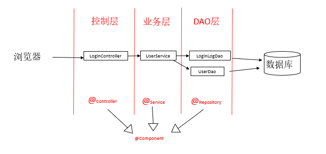
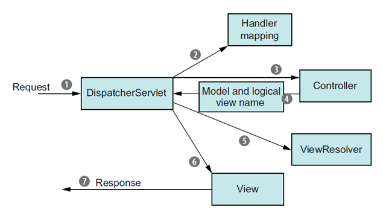
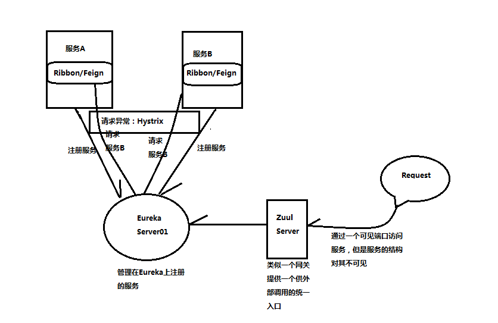

多选
写在前面
十分十分建议去看一下《Spring 实战》这本书，这里指路第四版的网页端，写的非常清楚，适合初学者
https://potoyang.gitbook.io/spring-in-action-v4/
spring不仅支持自己的开发框架，同时支持第三方开发框架
AOP 横切关注点 包括 日志 安全 事务 缓存
AOP 通知 advice 注解
- @Before 在目标方法被调用之前调用通知功能
- @After 在目标方法完成之后调用通知，此时不会关心方法的输出是什么
- @AfterReturning 在目标方法成功执行之后调用通知
- @AfterThrowing 在目标方法抛出异常后调用通知
- @Around 通知包裹了被通知的方法，在被通知的方法调用之前和调用之后执行自定义的行为。
AOP生效加什么注解
- @EnableAspectJAutoProxy //开启AspectJ的自动代理机制
提到过一些注解，有些注解具备component的能力 controller repository service
@Aspect
- 作用是把当前类标识为一个切面供容器读取
- 加注解的普通POJO
- 定义可重用的切点
- Around通知
- 定义参数（CD），测试
在实现控制器的时候有个requestmapping 是否只能加在方法上？ 否
- 标注在类级别上
- value 相当于一个命名空间
- 标注在方法级别上
- 标注在类级别上
启动springmvc使用的注解
- @EnableWebMvc
控制器方法实现的时候
- 可以返回一个视图的名字
- 可以返回一个rest的对应Java对象，对对象进行json转换
- 能进行重定向（使用
redirect:前缀）
数据源 定义数据源jdbc drivermanagerdatasource 没有做池化处理
没有把数据源写在代码中，希望在生产环境中切换的话使用@Profile注解，写在配置文件中
业务层和持久层用接口隔离，业务层看到数据访问层的接口，隔离的好处是？
- 便于测试
- 便于更换数据源
- 调用方便
- 解除耦合
hybernate 基于hybernate开发访问数据库的代码，目标是获得session，拿到session接口才能访问
hybernate使用需要定义数据对象与数据库表的映射关系
- xml
- 用注解定义表的关系
hql查询语言，hybernate支持标准sql查询
- HQL:hibernate query language，即hibernate提供的面向对象的查询语言
- select/update/delete…… from …… where …… group by …… having …… order by …… asc/desc
- QBC查询: query by criteria 完全面向对象的查询
- 本地SQL查询
- HQL:hibernate query language，即hibernate提供的面向对象的查询语言
jpa实现数据访问的时候，必须定义数据对象和数据表映射关系
- @Entity、@Column
关于jpa，springdata提供jpa简化实现，关于springdatajpa 如何开发这个
- 加什么注解
- @EnableJpaRepositories 注解
- 定义什么接口
- JpaRepository
- 实现一个自己查询逻辑的话，自己实现类的命名怎么命名
- 定义查询方法，无需实现
- 领域特定语言（domain-specific language，DSL)，spring data的命名约定
- 查询动词 + 主题 + 断言
- 查询动词：get、read、find、count
- 声明自定义查询
- 不符合方法命名约定时，或者命名太长时
- @Query(“select …”)
- 使用EntityManager直接低层实现
- 接口名+Impl的实现类
- 定义查询方法，无需实现
- 要不要接口名把方法原型重写一遍
- 不要
- 继承了什么接口
- JpaRepository
- 加什么注解
cuid
mongodb，需要使用一个注解 document
- @Document注解是java对象定义的，来自于Java元注解
mongodb存储数据，对数据做操作，java对象不需要序列化
connection as
关系型数据库的对应关系
- 以行和列的形式存储数据，行和列的形式被称为表，表是由一组相关实体组成的集合。一组表组成了数据库。
- 表中的一行称为关系的一个元组，用来存储事物的一个实例；
- 表中的一列称为关系的一个属性，用来描述实体的某一特征。
mongodb shell 基于JavaScript的，可以写一些脚本
redis 的特点，支持的数据类型
- Redis支持数据的持久化，可以将内存中的数据保存在磁盘中，重启的时候可以再次加载进行使用。
- Redis不仅仅支持简单的key-value类型的数据，同时还提供list，set，zset，hash等数据结构的存储。
- Redis支持数据的备份，即master-slave模式的数据备份。
Ehcache和redis的区别
- ehcache直接在jvm虚拟机中缓存，速度快，效率高；但是缓存共享麻烦，集群分布式应用不方便。
redis是通过socket访问到缓存服务，效率比ecache低，比数据库要快很多，处理集群和分布式缓存方便，有成熟的方案。 - redis属于独立的运行程序，Ehcache与java程序绑定在一起
- ehcache直接在jvm虚拟机中缓存，速度快，效率高；但是缓存共享麻烦，集群分布式应用不方便。
为什么用Ehcache
- 为了使程序用起来感觉很快，引入Ehcache可以减少对数据库的访问。
- 简单、袖珍、轻量
Ehcache支不支持数据持久化
- 支持
使用缓存编程几个常用的注解
- @EnableCaching 启用注解驱动的缓存
- @Cacheable 表明 Spring 在调用方法之前，首先应该在缓存中查找方法的返回值。如果这个值能够找到，就会返回缓存的值。否则的话，这个方法就会被调用，返回值会放到缓存之中
- @CachePut 表明 Spring 应该将方法的返回值放到缓存中。在方法的调用前并不会检查缓存，方法始终都会被调用
- @CacheEvict 表明 Spring 应该在缓存中清除一个或多个条目
- @Caching 这是一个分组的注解，能够同时应用多个其他的缓存注解
关于容器，容器和虚拟机的区别
- 容器是与主机共享资源的独立进程。
- 与虚拟机不同，容器不会虚拟化硬件，也不需要客户操作系统。
- 在容器中，运行应用程序所需的必要组件都打包为单个映像，可重复使用。
- 执行映像时，它在隔离环境中运行，不共享内存、CPU 或主机操作系统磁盘。这可以保证容器内的进程无法监视容器外的任何进程。
docker run 常用命令参数 -P -d等
- -d: 后台运行容器，并返回容器ID
- -i: 以交互模式运行容器，通常与 -t 同时使用
- -t: 为容器重新分配一个伪输入终端，通常与 -i 同时使用
- -p: 指定（发布）端口映射，格式为：主机(宿主)端口:容器端口
- -P: 随机端口映射，容器内部端口随机映射到主机的高端口
- –name=”nginx-lb”: 为容器指定一个名称
- -e username=”ritchie”: 设置环境变量
- –env-file=c:/temp1/t.txt: 从指定文件读入环境变量
- –expose=2000-2002: 开放（暴露）一个端口或一组端口；
- –link my-mysql:taozs : 添加链接到另一个容器
- -v c:/temp1:/data: 绑定一个卷(volume)
- –rm 退出时自动删除容器
docker 几个管理的命令，哪四个管理的命令
- docker container –help
- docker –version
- docker version
- docker info
- docker image ls
- docker pull
spring boot和spring cloud 的关系是什么
Spring Boot提供了基于java的、面向REST的微服务框架
Spring Cloud使实施和部署微服务到私有云或公有云变得更加简单
实现配置服务的时候，配置服务本身基于springboot开发，实现zuul服务
springcloud解决的问题
- 使得实施和部署微服务到私有云或者公有云变得更加简单
当一个服务需要去获取配置数据的时候，需要向配置服务要数据，配置服务如何知道要的是哪个文件的数据
- 服务名和profile
实现配置服务的时候，在启动类上加什么注解 ，使用配置服务的服务端和客户端什么都不需要加
- @SpringBootApplication
@EnableConfigServer
- @SpringBootApplication
服务网关处，可以实现什么样的能力
- 验证和授权
- 静态路由
- 动态路由
- 度量数据收集和日志记录
简答
WEB MVC 分层

- 模型（Model）代表数据控制器。数据的读取，插入，更新都是由模型来负责。
- 视图（View）是展示给用户的最终页面。视图负责将数据以用户友好的形式展现出来。
- 控制器（Controller）是模型，视图以及其他任何处理 HTTP 请求所必须的资源之前的中介
处理流程
- 控制器最先被调用，并被赋予外部输入
- 控制器根据外部输入向模型请求数据
- 模型从数据库获取数据并发送数据到控制器
- 控制器处理该数据并发送封装好的数据到视图
- 视图根据接到的数据最终展示页面给用户浏览
处理请求的过程

- 在请求离开浏览器时，会带有用户所请求内容的信息，至少会包含请求的 URL。但是还可能带有其他的信息，例如用户提交的表单信息。
- 请求到达DispatcherServlet，DispatcherServlet 会查询一个或多个处理器映射（handler mapping）来确定请求的下一站在哪里，处理器映射（handler mapping）会根据请求所携带的 URL 信息来进行决策。
- 根据mapping选择合适的控制器，DispatcherServlet 会将请求发送给选中的控制器。到了控制器，请求会卸下其负载（用户提交的信息）并耐心等待控制器处理这些信息。
- 控制器在完成逻辑处理后，通常会产生一些信息，这些信息需要返回给用户并在浏览器上显示。这些信息被称为模型（model）。控制器所做的最后一件事就是将模型数据打包，并且标示出用于渲染输出的视图名。它接下来会将请求连同模型和视图名发送回 DispatcherServlet 。
- DispatcherServlet 将会使用视图解析器（view resolver） 来将逻辑视图名匹配为一个特定的视图实现，它可能是也可能不是 JSP。
- 请求的最后一站是视图的实现（可能是 JSP），在这里它交付模型数据。请求的任务就完成了。
- 视图将使用模型数据渲染输出，这个输出会通过响应对象传递给客户端。
微服务相比于传统的单体业务有什么优势，为何关注微服务，有什么典型特征，单体有什么不足
优势：
- 易于开发与维护
- 独立部署
- 伸缩性强
- 与组织结构相匹配
为何关注微服务：
- 多人开发一个模块/项目，提交代码频繁出现大量冲突。
- 模块间严重耦合，互相依赖，每次变动需要牵扯多个团队，单次上线需求太多，风险大。
- 主要业务和次要业务耦合，横向扩展流程复杂。
微服务典型特征：
- 容易被替换和升级。
- 职责独立完整。
- 可选择最适合自己的技术方案。
- 架构由层次化转向扁平化。
单体架构的不足：
- 数据库的表对所有模块可见
- 一个人的修改整个应用都要重新构建、测试、部署
- 整体复制分布式部署，不能拆分按需部署
服务注册与发现的好处，zuul 等在微服务中的作用与关系
好处：
- 快速水平伸缩，而不是垂直伸缩。不影响客户端
- 提高应用程序的弹性
Eureka作用：
- 服务端用于服务信息的注册
- 客户端用服务名字从server那获得示例的端口号、IP等信息
- 客户端拿到之后可以进行访问服务端的资源
关系：

- Eureka，用于服务发现
- Ribbon，主要提供客户侧的软件负载均衡算法
- Zuul使用了一系列不同类型的过滤器，使我们能够快速灵活地将功能应用到服务中。
- Feign和Ribbon 是 Spring Cloud 的 Netflix 中提供的两个实现软负载均衡的组件，Ribbon 和 Feign 都是用于调用其他服务的，方式不同。Feign 则是在 Ribbon 的基础上进行了一次改进，采用接口的方式，将需要调用的其他服务的方法定义成抽象方法即可，不需要自己构建 http 请求。
4种客户端弹性模式
客户端负载均衡（client load banlance）模式
- Ribbon提供的负载均衡器，帮助发现问题，并删除实例
断路器模式(Circuit Breaker Patten)
- 监视调用失败的次数，快速失败
后备（fallback）模式
- 远程服务调用失败，执行替代代码路径
舱壁隔离模式(Bulkhead Isolation Pattern)
- 线程池充当服务的舱壁